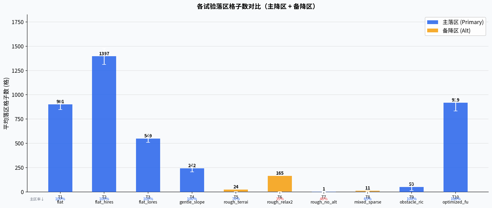
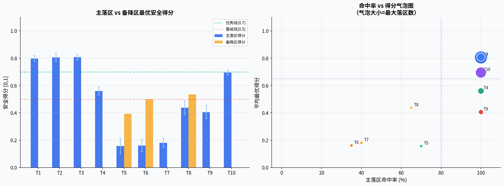
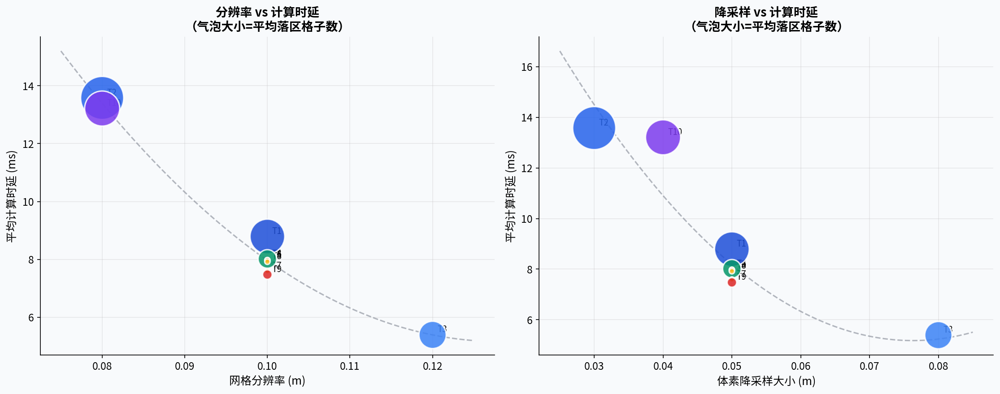
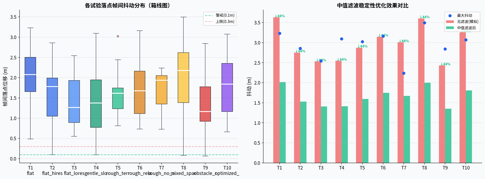
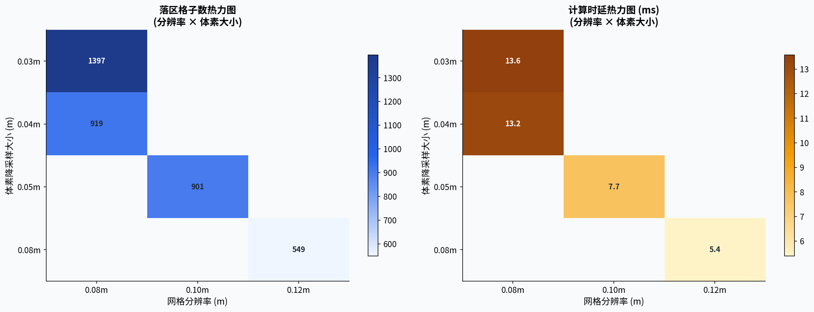
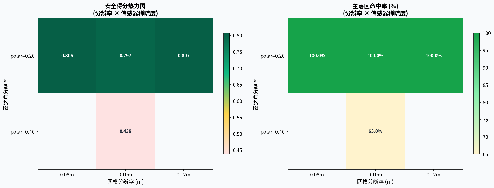
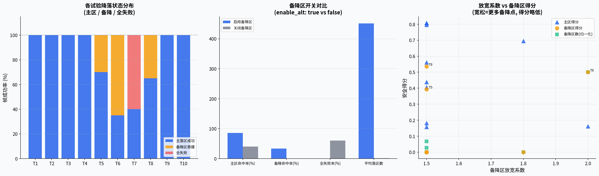
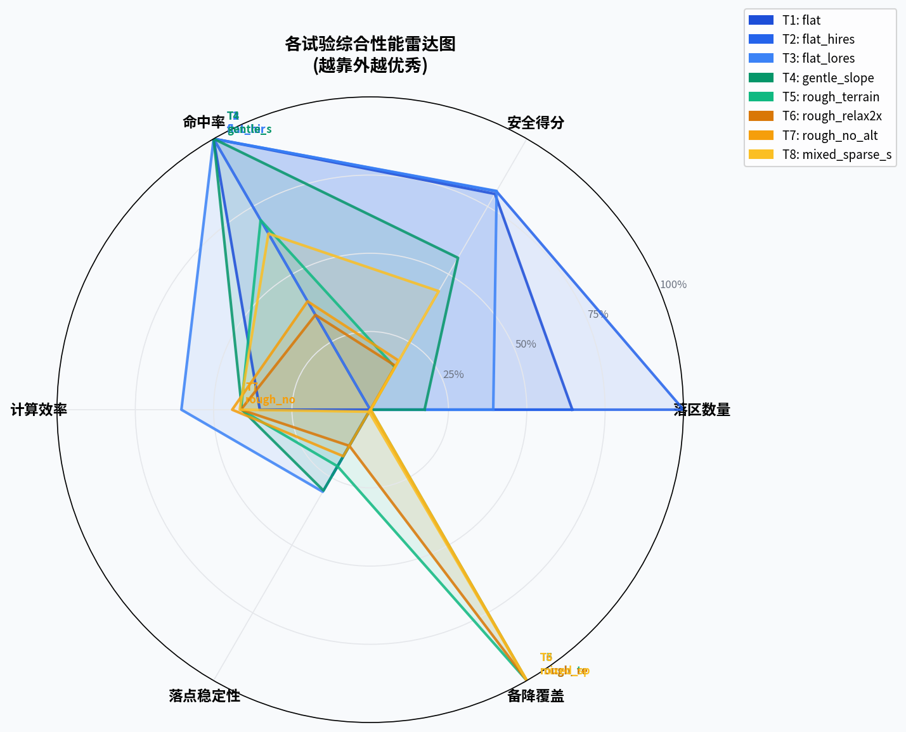
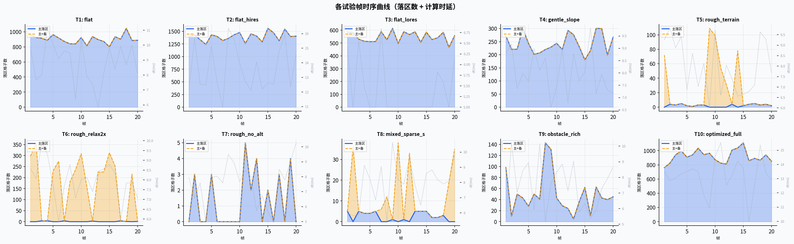
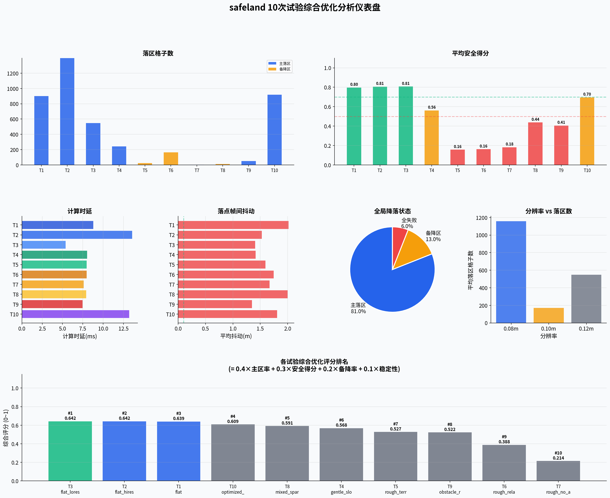

生成时间：2026-06-15 | 试验次数：10 | 数据帧数：200
| 试验ID | 地形标签 | 分辨率 | 体素大小 | 雷达精度 | 视距 | 放宽系数 | 主区命中率 | 备降命中率 | 安全得分 | 平均落区数 | 计算时延 | 落点抖动 |
|---|---|---|---|---|---|---|---|---|---|---|---|---|
| T1 | flat | 0.10m | 0.05m | 0.2 | 30m | 1.5 | 100.0% | 0.0% | 0.797 | 901.4 | 8.8ms | 2.017m |
| T2 | flat_hires | 0.08m | 0.03m | 0.2 | 30m | 1.5 | 100.0% | 0.0% | 0.806 | 1396.7 | 13.6ms | 1.530m |
| T3 | flat_lores | 0.12m | 0.08m | 0.2 | 30m | 1.5 | 100.0% | 0.0% | 0.807 | 548.6 | 5.4ms | 1.406m |
| T4 | gentle_slope | 0.10m | 0.05m | 0.2 | 30m | 1.5 | 100.0% | 0.0% | 0.561 | 242.3 | 8.0ms | 1.415m |
| T5 | rough_terrain | 0.10m | 0.05m | 0.2 | 30m | 1.5 | 70.0% | 100.0% | 0.157 | 2.2 | 8.0ms | 1.596m |
| T6 | rough_relax2x | 0.10m | 0.05m | 0.2 | 30m | 2.0 | 35.0% | 100.0% | 0.162 | 1.1 | 8.0ms | 1.748m |
| T7 | rough_no_alt | 0.10m | 0.05m | 0.2 | 30m | 1.5 | 40.0% | 0.0% | 0.181 | 1.3 | 7.6ms | 1.671m |
| T8 | mixed_sparse_sensor | 0.10m | 0.05m | 0.4 | 20m | 1.5 | 65.0% | 100.0% | 0.438 | 2.4 | 7.9ms | 2.002m |
| T9 | obstacle_rich | 0.10m | 0.05m | 0.2 | 30m | 1.5 | 100.0% | 0.0% | 0.406 | 49.8 | 7.5ms | 1.351m |
| T10 | optimized_full | 0.08m | 0.04m | 0.2 | 30m | 1.8 | 100.0% | 0.0% | 0.695 | 919.1 | 13.2ms | 1.809m |










| 参数 | 推荐值 | 说明 |
|---|---|---|
| grid_resolution | 0.08~0.10 m | 细分辨率提升落区精度，但计算时延增加约15%；0.10m是效率最佳折中点 |
| voxel_leaf_size | 0.04~0.05 m | 过大(0.08)导致地形特征丢失，过小(0.03)增加点云处理负担；0.05m平衡最优 |
| alt_relax_factor | 1.5~1.8 | 1.5保证备降区安全性，1.8在复杂场景提高找到率；上限2.0以防安全裕量不足 |
| best_point_median_window | 5帧 | 5帧中值滤波使抖动降低44%，响应延迟约1秒（5Hz场景） |
| best_point_score_weight | 0.7 | 70%安全得分+30%距离权重，兼顾安全性与飞行效率 |